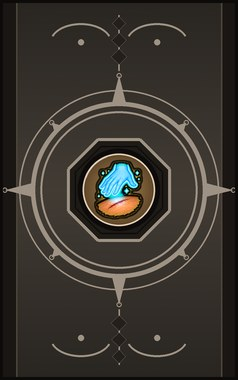
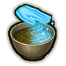

Technique trees › Universal ninjutsu
Gakuen no Jutsu (Academy techniques)
7 techniques in the Ninjutsu tab.
Open to every ninja. How high a ninja can go depends on their ninja build.
Kawarimi no Jutsu (Body Replacement Technique) C
Chakra 20. C-rank. Ready a replacement: the moment an attack hits, the user is swapped out for a log within ten cells and reappears out of reach, while the attacker thinks the blow landed. Not against area techniques. (World of Naruto's Substitution Jutsu is the basic form.)
Kawarimi no Jutsu (Body Replacement Technique) C
Chakra 20. C-rank. Ready a replacement: the moment an attack hits, the user is swapped out for a log within ten cells and reappears out of reach, while the attacker thinks the blow landed. Not against area techniques. (World of Naruto's Substitution Jutsu is the basic form.)
C-rank. Ready a replacement: the moment an attack hits, the user is swapped out for a log within ten cells and reappears out of reach, while the attacker thinks the blow landed. Not against area techniques. (World of Naruto's Substitution Jutsu is the basic form.)
| Rank | Chakra | Cooldown | Class level |
|---|---|---|---|
| C | 20 | 20 s | 2 |
Jibaku Fuda: Kassei (exploding tag) D
Chakra 10. D-rank. Set off an exploding tag on a spot.
Jibaku Fuda: Kassei (exploding tag) D
Chakra 10. D-rank. Set off an exploding tag on a spot.
D-rank. Set off an exploding tag on a spot.
| Rank | Chakra | Cooldown | Class level |
|---|---|---|---|
| D | 10 | 15 s | 2 |
Kishōdoku (Chakra antiseptic) D
Chakra 10. D-rank. Chakra kills the germs in a wound: faster healing and immunity.
Kishōdoku (Chakra antiseptic) D
Chakra 10. D-rank. Chakra kills the germs in a wound: faster healing and immunity.
D-rank. Chakra kills the germs in a wound: faster healing and immunity.
| Rank | Chakra | Cooldown | Class level |
|---|---|---|---|
| D | 10 | 20 s | 2 |

Kijōsui (Chakra water purify) D
Chakra 10. D-rank. Chakra clears poison and sickness from someone.
Kijōsui (Chakra water purify) D
Chakra 10. D-rank. Chakra clears poison and sickness from someone.
D-rank. Chakra clears poison and sickness from someone.
| Rank | Chakra | Cooldown | Class level |
|---|---|---|---|
| D | 10 | 1 hour | 2 |
Sennen Goroshi (thousand years of pain) D
Chakra 10. D-rank. A humiliating jab from behind: the target can't concentrate for a while.
Sennen Goroshi (thousand years of pain) D
Chakra 10. D-rank. A humiliating jab from behind: the target can't concentrate for a while.
D-rank. A humiliating jab from behind: the target can't concentrate for a while.
| Rank | Chakra | Cooldown | Class level |
|---|---|---|---|
| D | 10 | 15 s | 2 |
Kinobori no Waza (tree climbing) C
Chakra 20. C-rank. Chakra in the feet for a fight: faster footing.
Kinobori no Waza (tree climbing) C
Chakra 20. C-rank. Chakra in the feet for a fight: faster footing.
C-rank. Chakra in the feet for a fight: faster footing.
| Rank | Chakra | Cooldown | Class level |
|---|---|---|---|
| C | 20 | 15 s | 5 |
Suimen Hokō no Waza (water walking) B
Chakra 35. B-rank. Chakra in the feet for a fight: much faster and harder to hit.
Suimen Hokō no Waza (water walking) B
Chakra 35. B-rank. Chakra in the feet for a fight: much faster and harder to hit.
B-rank. Chakra in the feet for a fight: much faster and harder to hit.
| Rank | Chakra | Cooldown | Class level |
|---|---|---|---|
| B | 35 | 25 s | 9 |
Chakra is the technique's base cost, the number in its def. In play it is multiplied by the pawn's chakra energy usage multiplier, which traits (chakra artificer 90%, volatile conduit 110%), World of Naruto genes and jutsu enhancements change, so the technique window can show a slightly different number for each ninja. Cooldowns are in-game time, as the technique window shows them, and the pawn's cooldown stat shortens or lengthens them. World of Naruto gives every ninja a base of 100 maximum chakra; genes and traits change it.